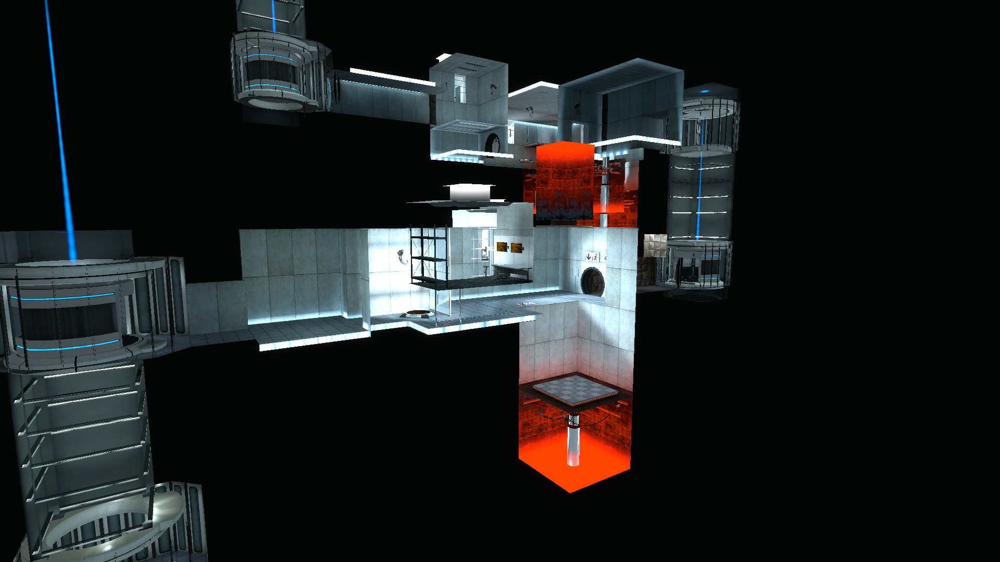
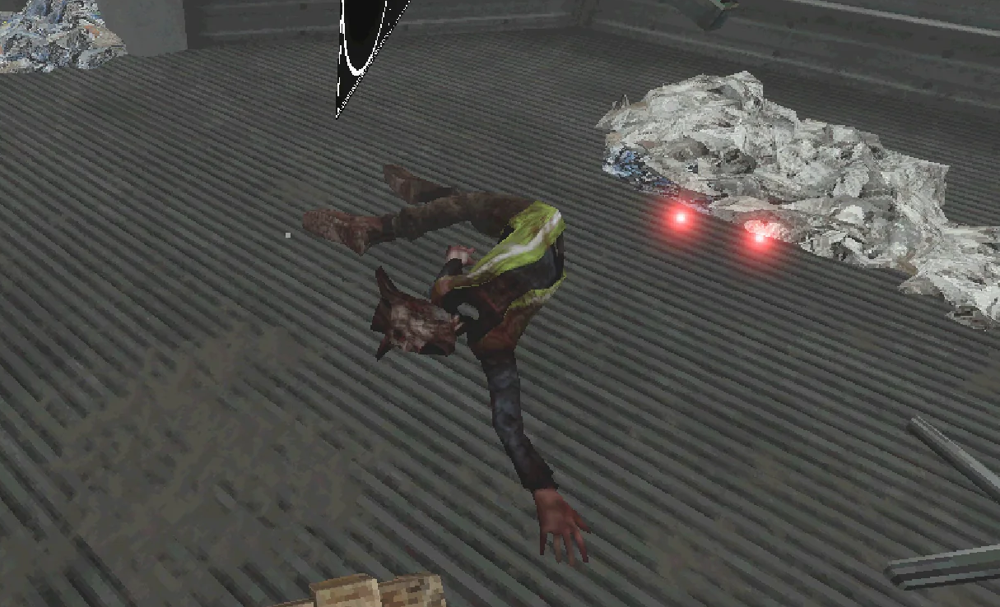

03/19/2024
As I’ve gotten more into game design, I’ve become more interested in the environments and the places around me, the places others have created in their games, the ways we navigate them, the things we put inside them, and the stories they tell. Over time, I’ve taken some notes and written down some thoughts I’ve had, then collected them here.
The world’s biggest hallway
I get this feeling walking around campus, especially at night, where I’m outside, but it feels like I’m inside. This time I was just outside the school’s library, taking a quick break on my walk to my apartment from work to battle an Alolan Mewouth in the gym there1. It’s hard to describe, but its a feeling I have whenever I’m in a very heavily designed area. I got the same feeling while staying at Disney World at the Port Orleans French Quarter and while walking around a bit of Indianapolis. The best way I can describe it is a liminal feeling, when you realize the outside space is more of a space that gets you from point A to point B, and not really a place you’d sit and watch the birds. I’m outside, but it feels more like I’m in a really, really big hallway.
Like on campus, if I’m walking between a dorm and a lecture hall and I stop, I suddenly become very aware that this landscape was made specifically to get students from building to building. It doesn't matter how nice and naturey the campus is. Even in the bit of campus that’s a literal forest, I occasionally still become aware that all the “outside” around me is purely utilitarian and serves to guide a massive flow of students between buildings. It suddenly feels like walking through high school halls. Just like at Disney, where the French Quarter has roads and building façades, but there’s no cars, and just endless hotel rooms with no houses. Or in Indy, where the urban planners use the outside space just as a link between shops. It’s nature, but… manufactured? I’m outside, but I’m not.
Like I said, hard to explain. Sometimes it’s negative, sometimes its positive. Maybe melancholy is the best word to describe it. But it’s a really interesting feeling to have, just once or twice. But the idea might be what the SCP community might call a “cognito hazard”2. Once you feel this feeling somewhere, you’ll always feel it, and nothing you can do will get rid of it, like a virus of an idea. Regardless, I strongly urge you to think about this next time you’re outside and somewhere that might fit this description. Its kind of neat.
Walls and smoke and mirrors
I think you’ll be hard pressed to find someone interested in games, especially PC games, who doesn't have a long list of praises for Portal. Describing what exactly makes it great and now much I love it is a topic for a different time, but some important details about it is 1) It takes place in the Aperture Science laboratory, presumably deep underground, 2) For most of the game you’re constrained to single (or occasionally multi-) room “test chambers”, rarely exploring outside the testing track until the last chapter of the game, and 3) it was created in a game engine called Source.
Source has a very distinct feel. When you start playing a Source game, you’ll almost instantly know its a Source game just based on the way it feels. No matter how overhauled the graphics may be, you can’t hide the Source source. This is partly due to the way Source levels are created using binary space partitioning, sort of like the way an old Doom map would be made. You start by drawing a square on a flat plane, then giving it a floor height and ceiling height, then adding details and terrain curves as needed3. Chaining these “rooms” together is how you create levels and environments. You essentially carve rooms out of the void, then add the detail. Because of this, Source excels at boxy rooms and long hallways4 5.
One of my favorite things to in Portal, and really all Valve games, is to noclip6 out of the level and explore all the oddities in the voids and locked off parts of the level. Sometimes you find really cool things, like the hidden rooms they project onto screens, or enemies waiting to be loaded into the level, or little placeholder object that just exist in the world to run scripts. Most of the time, however, you find the horrifying endless black void.
Because of this carve-existace-out-of-the-void nature, anything beyond the walls of a level is just unrendered void. Noclipping out of a level reveals this strange, isometric view of the level, floating in space. A noclipped view of a Portal looks like this:

Now, I’m not an architect, but I’m pretty sure walls aren’t meant to be one sided and infinitely thin. Seeing this view of the levels is kind of startling. Standing in the chambers, you get the feeling that behind the walls are the maintenance tunnels, observation rooms, offices, and several hundred feet of concrete and stone. A concrete wall is a concrete wall, poured and reinforced with rebar. Then you see this view, and you realize the whole world is designed just for your perspective. Nothing more.
Even further, the walls aren’t even walls! If I touch a wall in real life, I’m touching the stuff. There’s atoms there. My wall is paint, drywall, studs, and insulation. A concrete wall looks like concrete, it feels like concrete, it is concrete. If I licked it, I’d assume it’d taste like concrete. In games, concrete walls are just like every other wall with a PNG slapped on them.
In real life, the attributes of the wall comes from the “stuff”. The physical materials, the atoms. In games, the “wall” that actually does all the wall work is just an invisible collision barrier. The look of the wall is an overlayed texture or material, and any details are the work of a normal map or attached models. If I press my face against my bedroom wall7, my face is hitting a wall. Pressing my character’s face against a wall in a game, its pressed against 4 or 5 overlapping layers giving the illusion of a wall. I’m touching an invisible filed that stops my movement, coated in a material that looks like concrete, and with an additional physics materials giving it the “feel” of concrete. Maybe its a dumb observation, but when designing rooms in games, its a quark I think about a lot. In life, protons, neutrons, and electrons make up our matter. In games, its models, textures, and collisions. Life is made of photons and atoms, video games are made of smoke and mirrors.
Then you push your face against a wall in VR and your motion de-syncs and you get really motion sick instantly and lose your balance and its a whole different riff on reality we’re not going to get into.
Liminal
Adjective
1: of, relating to, or situated at a sensory threshold: barely perceptible or capable of eliciting a response
2: of, relating to, or being an intermediate state, phase, or condition: in-between, transitional
From the Latin limin- & limen, meaning threshold
The idea of liminal spaces is partly responsible for starting this collection of notes. Liminal spaces, to me, are spaces not meant to truly be observed. You pass through them, going from A to B, not really noticing what’s around you. Or they’re rooms or areas who’s functions have long been lost, now sitting in a void of disuse or adapted use, still maintaining the hint that this space was for something else. They’re the spaces where you’d expect to see hundreds of people, and only notice their strangeness when you’re alone. They’re the stretches of hallways between airport terminals and security, bustling with people when you leave in the afternoon, but devoid of people when you return at night. They’re the classrooms at the end of the hall that were once used in the 80s, but now just hold extra desks. They’re the school gyms or children’s party centers in the evening when no one is there. There’s nothing intrinsically strange about these places, but they become strange when you stop to truly observe the space, or when everyone else leaves. Serving their functions, you’ll hardly even be aware of their existence.
I know there’s already 7 novemdecillion8 videos online explaining liminality and liminal spaces online, but I wanted to set the groundwork for this: the vast majority of games that try to take place in liminal spaces get it dead wrong. First, most games take liminal to just mean big, empty, repetetive, and boring. They forget the fact that they should serve, or have formerly served, some kind of purpose. Second, they tend to completely ruin the illusion of limiality by stuffing some kind of horrifying monster, or in some cases, a flock of a few dozen, into the space and turn the who experience into just a poorly made horror game that takes place in a really boring environment. They essentially spawn some NPCs in a Gmod map and call it a day. I’m going to wrap this up here because I could rant about this for days and get well off the path of talking about environments and design, but my point is this: Liminal spaces aren’t spaces where you feel alone but you’re not, they’re spaces where you truly are alone, but you feel like you shouldn’t be. Missing this point and adding random spooky guys ruins the illusion.
Unknown Truths
>> This section contains massive spoilers for the video game Voices of the Void. <<
In Voices of the Void, you sit in your office/base at a large terminal scanning the skies for alien signals. The base is in the center of a large fenced off park surrounded by 24 massive radio towers, 3 transformers, and some other points of interest. As you play, random and scripted events happen, building up this massive, amazing, horrifying story. After you download your signals for the day, fix the transformers, and get the status codes for the radio towers (the game has more travel and running around than sitting), you’re free to explore till the next day.
It’s only in beta, and its one of my favorite games of all time. Its truly amazing. As of writing, it’s free on itch.io and worth sinking an hour or 40 into.
As you explore the map, random spawns and buried items help clue you in to what’s going on in this park and the vast space above it. But no amount of exploration will reveal one of the biggest secrets.
Last chance. Absolutely massive spoilers ahead.
If you were to cheat, or somehow clip the camera into the terminal you spend hours in front of, you’d see the body crushed beneath it. If you did the same to the inaccessible vent on your roof, you’d find six more. In a tiny space between the first and second floors, right under where you sleep and cook, 18 more.
There is absolutely no way to see these in the game. Only through cheats and glitches can you see them. But they’re there. There are 24 corpses surrounding you at all times. You’ll never know about them. But that doesn’t change anything. They’re right there.
I don’t know what the developer has in mind for these bodies, nor do I want to speculate. However these bodies do or don’t fit into the story is entirely up to them. But just their existence, and the fact there are key aspects of this universe kept from us, is terrifying.

...and the body hiding below it.
There’s something unnerving to me about having a major part of the story so close, yet completely inaccessible to us. When you play through this game (normally, with no cheats or glitches at least), there is some key part of this universe, some story fragment, that is completely kept from us. It’s there. It’s still cannon. It still carries implications and lore. We just don’t know about it.
Of course, this is normal in real life. I don’t know everything that’s going on in the world. I hardly even know what’s going on in my own apartment half the time. But in stories, all we have as concrete fact is what the narrator tells us. We can speculate on meanings, connections, or implications all we want, but at some point we have to accept that what the narrator says is the foundation of fact that their world is built on. We have to accept Issac Asimov’s Three Laws of Robotics are truly unbreakable9. We have to accept Doctor T. J. Eckleburg’s billboard looks exactly as F. Scott Fitzgerald says it does, whatever we may speculate it means in English class. Whether Dickens or Henson, we have to accept The Ghost of Christmas Present is a little absent minded. The story exists as they tell it.
But here, that breaks. The story now exists as it’s told, but also exists in some way more. Since we don’t know it, it doesn’t matter to us, but it’s still there. These people died, and if you don’t know why, so could you. Now that we know these bodies are there, three major questions are raised: how did they die, who put them there or sealed them in, and, the most unnerving one, what else don’t we know?
I can only imagine the face someone would make as they finish this game in its entirety, leaning back in their chair thinking, “Wow. What a great game and a fun story” only to have the developer lean over their shoulder and whisper, “Your dead coworkers were right next to you the whole time *wink wink*.” In those 11 words and two winks, everything we know changes, while physically everything stays the same, and there’s not a damn thing we can do about it. So it goes.
Invisible Walls
Invisible walls always annoyed me in video games. I understand why they exist: infinite maps, in the vast majority of cases, can’t exist. So devs add oceans, walls of trees, fences, “broken” bridges, or invisible walls. While I know why they exist, the details just out of each always pique my curiosity. Or they always seem to be right in front of my car when I’m going 90 mph. Uncrossable map elements I can forgive easier, but just straight, unexplained, unmasked invisible walls?
For the past three years of college, on my way from the bus stop to work or class, there’s a dozen or so streets I’ve never been down. I pass these streets twice, sometimes four or six times a day depending on how busy I am. Five days a week, for 32 weeks, for the past three years, and I have no idea what the world looks like down those streets.
I suppose invisible walls are more realistic than I give them credit for.
1Am I playing Pokemon Go? Or am I beating the shit out of a Hawaiian cat in a library’s workout center? You decide!
2https://scp-wiki.wikidot.com/psa-cognitohazards-and-you
3From what I understand and have seen in Hammer, which is very little. Assume “citation needed” for this whole bit.
4Or so Beginner’s Guide tells me.
5Again, this is an oversimplification from someone who never actually made a map in Source, but its good enough for what I’m trying to do here. If you’re interested in it, check out the Valve Dev forums.
6“Noclip” means to remove the collisions and gravity from the player, allowing you to fly around and move through solid object, revealing things typically hidden from the player.
7No, I don’t do this often.
8I know this is a real number because cookie clicker says so.
9At least in I, Robot. We can discuss the other 53 or so books set in that universe later.